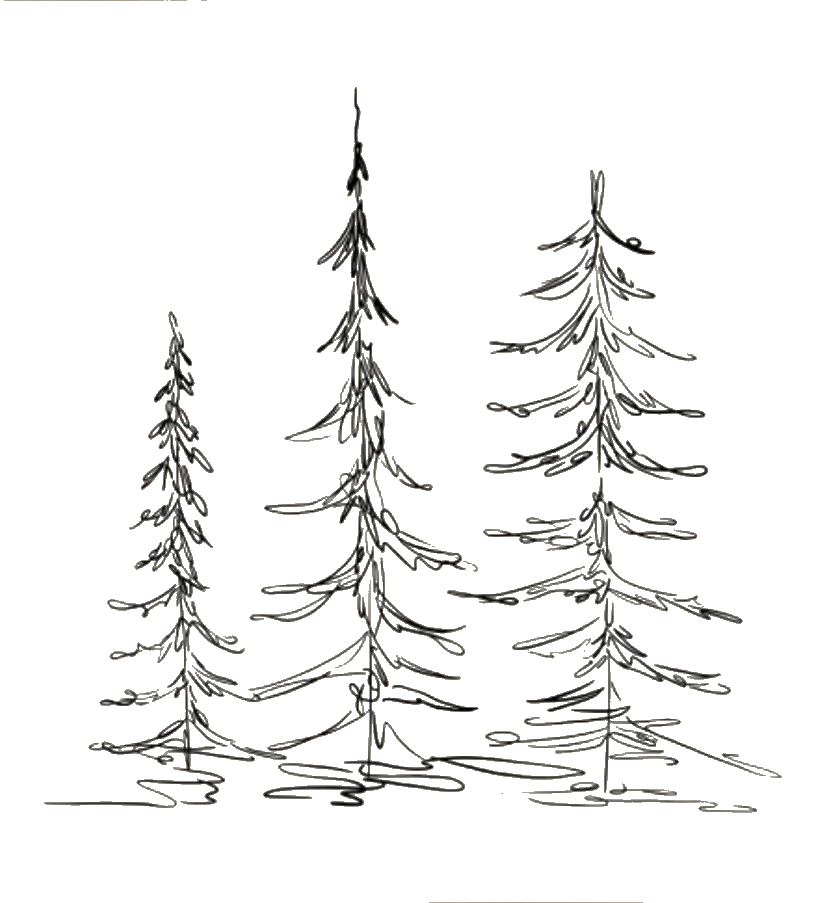
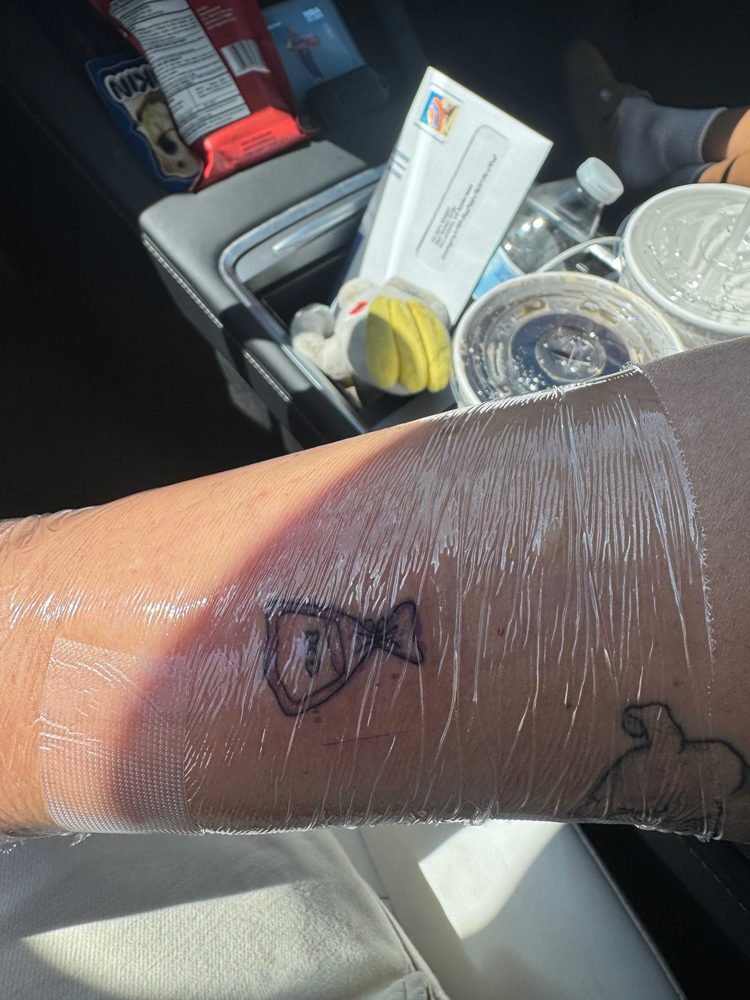
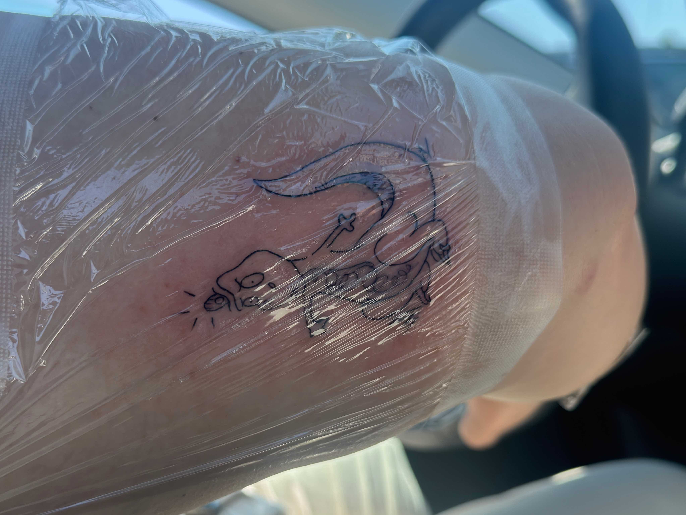
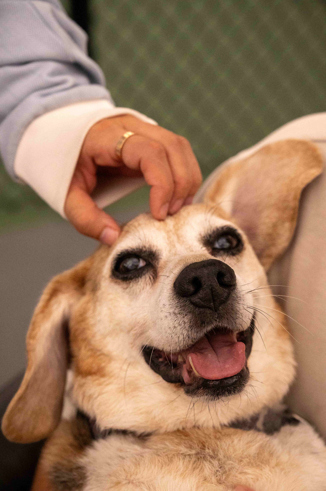
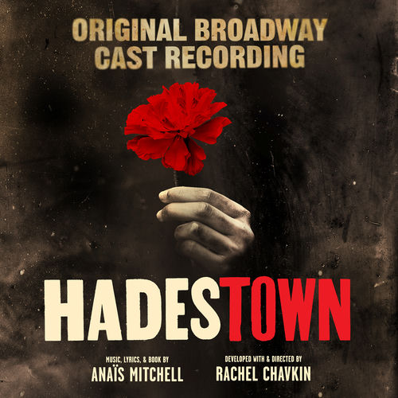
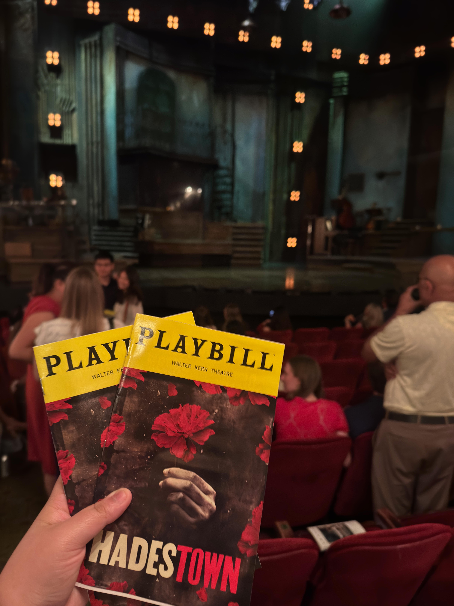

Genuinely Major Updated to the Blog
- A tiny bit of whimsy to the top
- *New* Post
- *New* To Do list
- *New* "Currently" Widget
- *NEW* Guestbook! - Check it out! You can now add messages and leave your mark on my site! please check it out.

Updates, random thoughts, honeslty a glorified tumblr.
I got some sick ass photos of my friends, genuinly some of the best photos ive taken for awhile. We went to try a dumpling house like 30 mins away, and then we went to the lake so they could smoke a joinnt and I could smoke my cigarettes. And SOMEONE had a great idea to go walk around our old highschool during a football game, so that brought up werid emotions....
And then tonight my mom threw some church party? so Erica and I just went out, took some photos of her skating and went to walamrt??? Because thats what you do in a small town. And we found two foam swords and, the two girls who just watched The Odyssey, we sword faught. I genuinely started laughing like I used to. This kid came up, can not be older than 10 years old and he was so nervous and asked us if he could play with us. And i turned him down and i started feeling terrible. I shouldve just said yes.
Today at lunch I saw an ad for a Texas senator or some shit and was claming that China was buying up land in Texas? yeah im not sure, it seems like Anti-Chinese Propaganda is coming back! YAY!...
where can i get some popcorn shrimp?
pfft what emo loser go into my website and posted that sad shit wtf? #stillthegoat
Anyways, i posted my dream Role Model set list so go check that out!
uh wtf guys.
Unfortunately I wasn't able to reread Homer's Odyssey before seeing the movie, but Erica and I were able to get tickets for the 70mm screening in Sacramento. And WOW. 10/10 yall gotta see!!!!
First things fisrt
RIP Odysseus - You wouldve loved Apple/Google Maps.
RIP Penelope - You wouldve loved Life360.
RIP Telemachus - You wouldve loved a glock.
RIP that one guy on crew who died jumping off the ship after he took the wax out of his ears - You wouldve loved noise cancelling headphones.
RIP the cyclops - You wouldve loved a pair of googles.
RIP King Agamemnon - You wouldve loved arua farming.
RIP Odyssues' crew - Yall wouldve loved MREs
If you guys bitch to me about spoilers, I will laugh in your face. Homers' Odyssey is a great masterpiece, dare I say THE great masterpiece. And its older than the entire New Testament. You cant cry spoiler to a book that is almost 2,800 years old.Besides that other than the obvious changes in the movie like taking the Nobody joke out of the movie (lame), the movie was amazing. I couldnt imagine a better director.
Sidetracking a bit, its related trust, today in class we were literally talking about the Greeks, and it was so cool to see my knowledge of the subject translated into the movie. Luckily, Erica had already seen the film, so I felt less bad about whispering fun facts to her. My favorite fact is that while Odysseus calls himself and his crew the 'Sea Peoples' in the movie, the Sea Peoples were very much real in history. BUT historians still don't have a definitive answer on who they actually were.
alright i hope yall are having a great week, im tired, but yall should go see the movie. especially if you can see it in 70mm. Also lwk i might be eligible for a history AA? so who knows maybe ill change majors.
Im sorry for the long post, and i hope you guys like the new design, small changes but its a sneak peek for what more is to come. There a new photos too! Okay Goodnight! *cue Taylor Swifts Lover, my exit song*.
So Ive come to the conclusion that at most, the people who sign up for this newsletter will only be getting 1 email a week for me. Im trying to keep it manageable for myself and for you guys, especially since school has started and I know that people's email is connected to said school. So im trying to let those emails past through first.
Im turning 21 in less than two months now, and people i know whos birthday is in december are already planning on what theyre doing. So should i start planning now?? Itll be my 21st! Thats huge no? i feel kind of lame for just wanting to get dinner with my nephew and his family. My parents wont be here so should I throw a rager? Do I even know enough people to throw a rager? I find it kind of lame to just want to go to a kings game.
Lastly for this night, my new photo class. I like the professor so far, so what im about to say has nothing to do with him. But oh my god that class is so boring, agian not because of the professor, but because i just know all this stuff already. Hopefully itll be more interesting as the semester progresses.
P.S. I hope you're all having a great week, most of yall are either starting classes or have already started. and to you guys i say good luck! This coming up week or two i will be uphauling the home page soon and updating photos from the recent giants game!
So writing this in my Lit class, guys everytime im in this class i remember why i stopped doing theater. Jesus, im not whimsy enough for some of these jokes. some of yall are just loud, they breathe loudly, laugh loudly, whipsers loudly just shut up please omg. youre activly listening is dumb and makes me lose my mind.
PSA wear fucking deodorant i beg. everyone else begs.
This weekend I had spent roughly around 20 hours in a theater. We did the Harry Potter Marathon like i said we would last post. And my god, i forgot how silly the first 2 movies are and then they hella lock in for the 3rd, 4th, and 5th movie. God Damn half blood prince sucks though and then it gets better. I was HYPED for Part 2. I love love love mcgonagall so much omg.
only like 14 left. I did though, fix the camera my dad brought home like 2 years ago for me (then proceeded to scream in my face about how useless photography is). The camera is a Yashica Electro 35mm film camera, which if it sounds familiar, is the same camera Andrew Garfeild's Peter Parker uses in the first of his Spiderman movies. Well actually mines older, his is a GSN or sm, which came out in 1973 and mine came out in 1966. So suck it parker *said in J. Jonah. Jameson's voice*. Im proud of myself for finally doing this though, of course I took the time where I couldve done my 6 classes of homework but wtv its worth it. We wont know if it works till i finish this roll and develop it. Which btw birthday coming up. BUY ME FILM!!!! If i get one more text of "oooooooh what should i get you" since yall cant get me drinks. FILM PLEASE I NEED!!!!
...I use Kodak Ultramax 400, but i LOVE kodak portra 400. every film photographer loves portra 400 trust.
The first photo is a photo of the kind of camera that I have, and the second photo is obvi andrews camera


So the Giants won last night, apparently that doesn't happen much...Honestly im not much of a baseball person, so i felt really bad asking all these really stupid questions. But personality if i brought someone to a basketball game and they kept asking question id be glad to answer every question, it shows that theyre paying attention and trying to make convo. They're putting effort in. And also i got a whole new roll of film shot at the game, so if those turn out well I will be really excited to share with yall.
My Comms class today talked about the different kind of communications specifically one way communication. LIKE ads on billboards. ex) the X-Men apocalypse billboard with J-Law and Apocalypse choking her out, and then next class were gonna talk about the Syndny Sweenie ad. very exciting.
now lets talk about what im doing this weekend. TWENTRY HOURS of Harry Potter. We're doing a Harry Potter Movie Marathon at the Mall. well see how that goes.
Currently in trig rn...bc im so dumb i need to redo Trig??? But i had my HIST 301 this morning, at 9am -_-, but another Professor Mowrer class. If you know anything about me, you know i LOVE professor Mowrer. Really excited about that class lwk, its Hisotry of Europe and the mediterranean to 1500. Which I think will touch Greece and Rome and im so excited. AND THEN NEXT SEMESTER I GET TO TAKE 302, which is just the same but from 1500 to now...its just pt2. anyways Trig is starting soon! Bye bye!
Update after Trig, Jesus that class is so fucking boring. I was FIGHTING trying not to sleep.
ok so far "first day" is a lie, techencily yes it is my first day, but ive only gone to one class. Sitting waiting for my next class to start.
Lets talk my frist class though, COMMs 351 Mass Media and Society, have no idea how discribe this class. Its a class based off of what mass media, trends and why they are trending and how it affects people. My Professor is so...intresting? im not sure how to discrbie him, he pronounced the word niche as “nitch”. which is a choice. Im really excited though, i think im gonna really enjoy this class.
kinda just sitting in my next class waiting for it start, I GOT A SWIVEL CHAIR THOUGH!!!! ok gtg will update yall after <3
also started a new Oregon Trail save file, as i do every beginning of the school year. Will keep you guys updated, Grace and Erica are both names in the party so hopefully we wont die of dysentery...no promises though, i suck at this game. Also we need to bring back smoking sections at colleges #bringbackcigerettes.
EDIT 11:15pm: guys after like 5 hours of classes, i then had to go to 4 hours of working. i am so tired. lwk idk if ill be able to do this for a whole semester. i tired.
And by crazy I mean all Ive done is work. pickleball, and then saw an amazing concert at Oracle Park.


I wont be talking about the conert TOO much here, that will probably be in the music page. But while at the concert the digi cam broke so I will be getting a new one of those, hopefully before I start going to kings games and the Role Model concert. But here was the fit from the concert.
Read more about the concert and my thoughts about it.Hey y'all, I did a complete overhaul on the books page, as well as added more photos to the Photos tab. Have fun exploring!
Honestly tonight was one of the bests Ive had in a while. Well the last few nights away from home are going down in my history book. Although wednesday night was my favorite night, it was a stunning night with the stars, the meteors and the company. Tonight I reconnected with two of my cloestest friends while playing some golf. Then had to virtually sit down with one of my oldest friends. And had to remind her that as her friend, my job is to see her value even when she cant. She is the smartest person i know, and not only that, but she has the ability to make everyone around her smarter. She is more than whatever person she is talking to or dating. And in a fitting ending I ended the night singing Dan by Noah Kahn with my middle school best friend.
Also Sabonis dropped some new photos and...he has hair now???
Hey guys! New addition to the blog, you can now sign up to get email notifications every time I post something new. This will be my first official push notification so HI! This is pretty cool and I hope you guys enjoy this as much as I do.
recently got 3 more new tattos...what that makes 10 now?? Wow am i cool yet?

The first one was a goldfish. As Coach Lasso said, "You know what the happiest animal on Earth is? It's a goldfish. You know why? Got a ten-second memory. Be a goldfish." Which is just a reminder to let things go.

The second one is a T-rex from Meet the Robinsons, which is about an orphan who spends his whole life thinking about the family that abandons him, and thoughout the movie, he learns that if he just keeps moving forward his family will come.

The last one is obvious, i like baking and i bake a lot of cookies.
Hey guys the newsletter will be ready soon, so if you want to be updated via email when i post sign up!
Charlie Says Hi Guys, and hes hoping everyone is having a better day than he is. He got his ears looked at today AND a bath. sheesh poor guy.



As most of you guys know, when I went to New York, I went to see Hadestown on Broadway. And it was spectacular. The set was breathtaking and the singing had so much emotion behind it. Well yesterday I went to see the pro shot, for the non-theater kids reading this, it's just the show recorded professionally. And let me just say, wow, they were somehow able to capture the depth and hypnotic feeling that you can only get when watching a show live. I caught myself doing the head tilting thing I do when I'm only watching a live show, just in a trance. Alas, I do believe watching the show is still worth it, you will never be able to recreate the energy and immersion that a broadway show should have.
Would it be weird if I were to explain the blog name? well most of yall know, shady has been dubed my nickname since middle school. geuss what is found under a tree...shade. there ya go
Yall Im pretty excited to use this blog, Ive been thinking about ditching insta cuz like why else should I have it other than updating people but now I have this. And now I have an outlet to just any inside thought is now an outside thought. Anyways idk if ill even finish the Music and Book page. Will see.

Hopefully you are able to read this, if you are. HEYYYYY FIRST POST WHO THIS??? Since this is my first post I would like to send some acknowledgements. First Erica, she was the one to inspire me to make a website and helped me whenever she could. Erica's Blog As well as my friend Tiffany who helped come up with this sick ass logo. And lastly Grace, who laughed her way though reading all the bios and rough drafts.
Just a few things to keep in mind while browsing: Firslty, these events are allllllll definitely fictional. And lastly, im trying to not use spell check as often so if you find a typo, and you are the first person to know. I will personaly send you ONE WHOLE DOLLAR